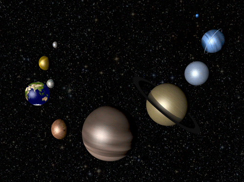

 Los planetas
Actualmente hay 8 planetas, pero durante muchos años fueron 9. Aquí te explicamos cuales son.
¿Qué son los planetas?
Cuerpo celeste sólido que gira alrededor de una estrella y que no emite luz propia. "los principales planetas que giran alrededor del Sol son, por orden de menor a mayor distancia de él, Mercurio, Venus, Tierra, Marte, Júpiter, Saturno, Urano y Neptuno" -Oxford Languages
LOS PLANETAS DEL SISTEMA SOLAR
Mercurio, Venus, la Tierra y Marte son mundos pequeños y rocosos, con densidad alta. Tienen rotación lenta, pocas lunas (o ninguna) y forma bastante redonda. En cambio, Júpiter, Saturno, Urano y Neptuno, los gigantes gaseosos, son enormes y ligeros, hechos de hielo y gases. Giran deprisa, tienen muchos satélites, más abultamiento ecuatorial y anillos
Mercurio
Mercurio es el planeta del sistema solar más cercano al Sol y el más pequeño. Forma parte de los denominados planetas interiores y carece de satélites naturales al igual que Venus.